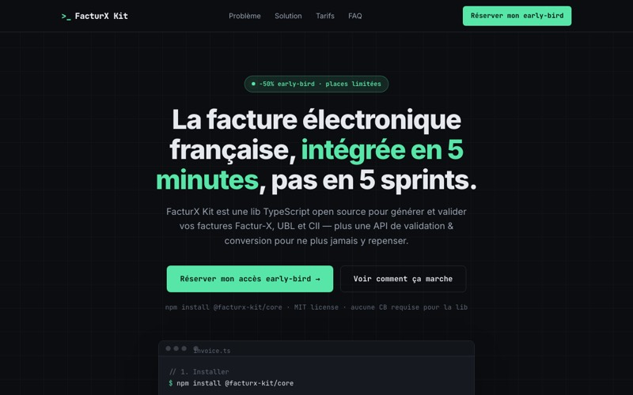
FacturX Kit
8.6Lib TypeScript open source + API pour générer et valider des factures Factur-X, UBL et CII avant la réforme 2026.
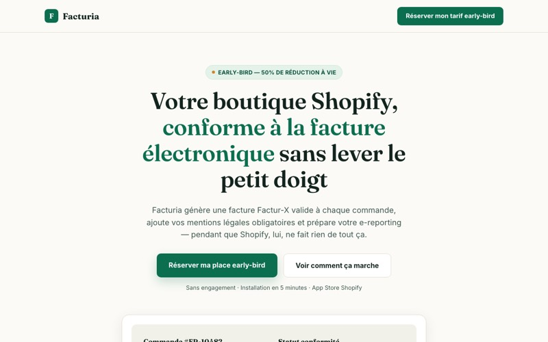
Facturia
8.2L'app qui met les boutiques Shopify françaises en conformité facture électronique : Factur-X, mentions, e-reporting.
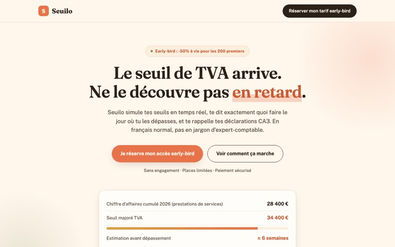
Seuilo
7.6Le copilote TVA des micro-entrepreneurs : simulateur de seuils, checklist de passage au réel, rappels CA3.
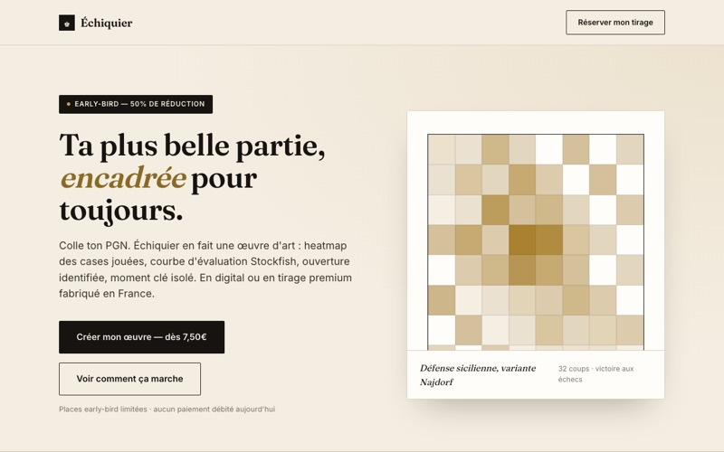
Échiquier
7.4Ta partie d'échecs (PGN) transformée en affiche d'art : heatmap, courbe Stockfish, ouverture. Digital ou print FR.
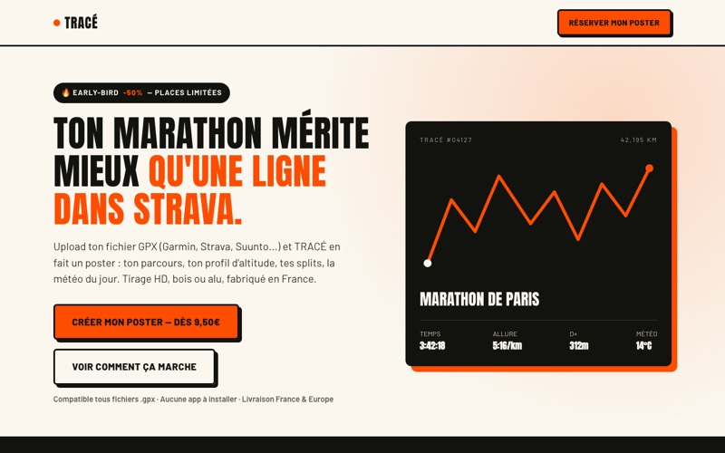
TRACÉ
7.2Ton GPX devient un poster de course : tracé, profil d'altitude, splits, météo du jour. Print fabriqué en France.
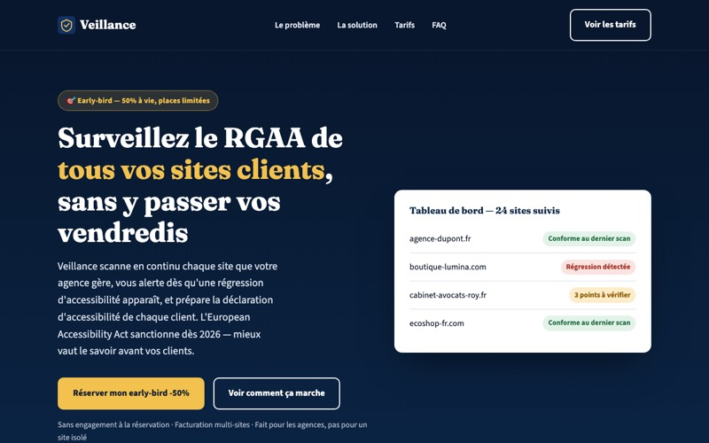
Veillance
6.8Monitoring d'accessibilité RGAA continu pour agences : scans multi-sites, alertes de régression, déclaration générée.
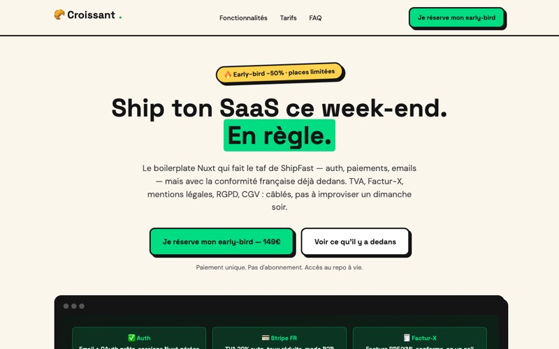
Croissant
6.8Le boilerplate Nuxt SaaS conforme France : Stripe + TVA FR, Factur-X ready, RGPD/CGV pré-rédigés. Ship ce week-end.
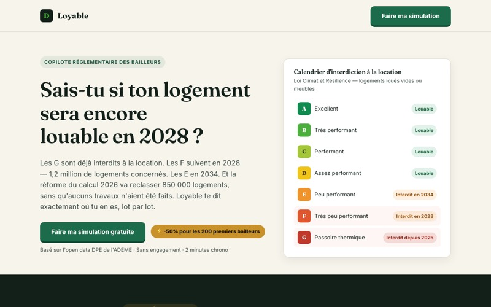
Loyable
6.6Le copilote des bailleurs de passoires thermiques : simulateur gratuit, alertes calendrier F/G, plan d'action.
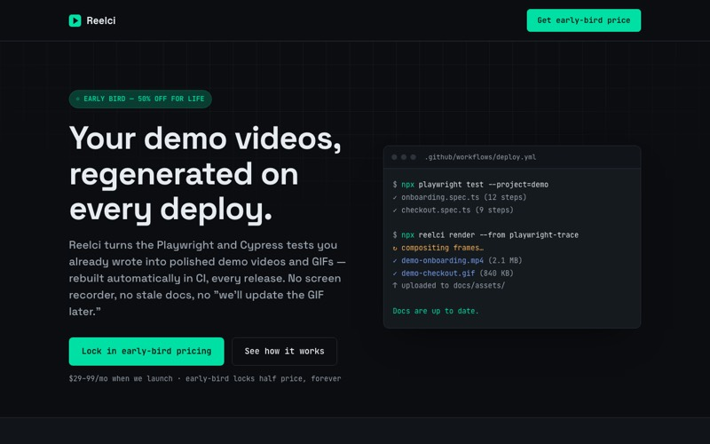
Reelci
6.6Vidéos et GIFs de démo produit auto-générés par tes tests E2E en CI — tes docs ne mentent plus jamais.
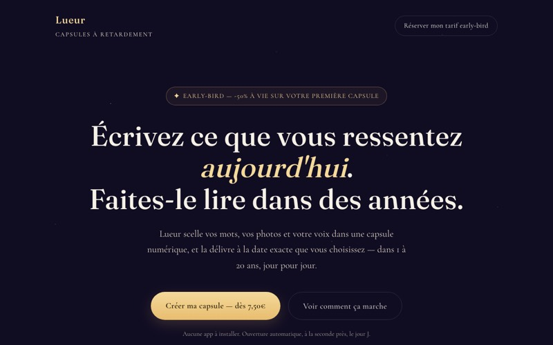
Lueur
6.4Messages, photos et vocaux délivrés dans 1 à 20 ans. Mariages, naissances, mots pour plus tard.
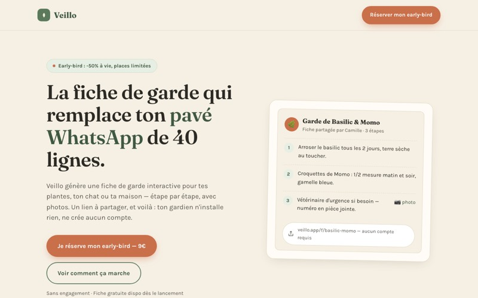
Veillo
6.4Fiches de garde interactives pour plantes, animaux et maison — partageables par lien, sans compte ni app.
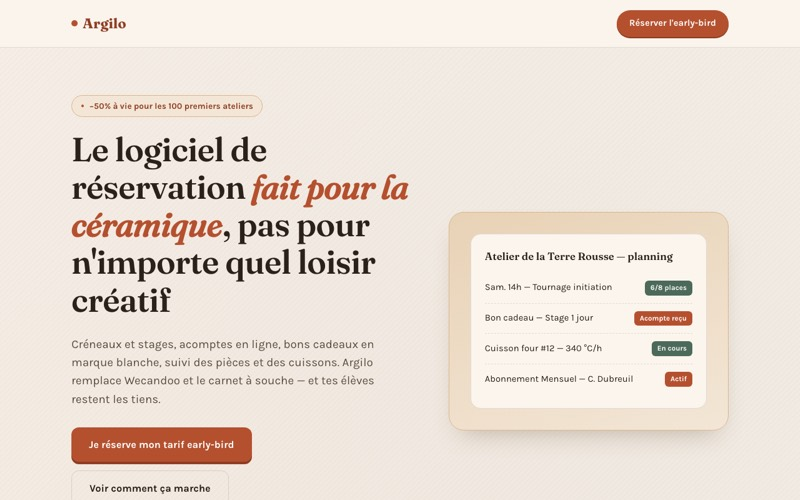
Argilo
6.4Réservation, acomptes, bons cadeaux et suivi des cuissons pour ateliers céramique. 0% de commission.
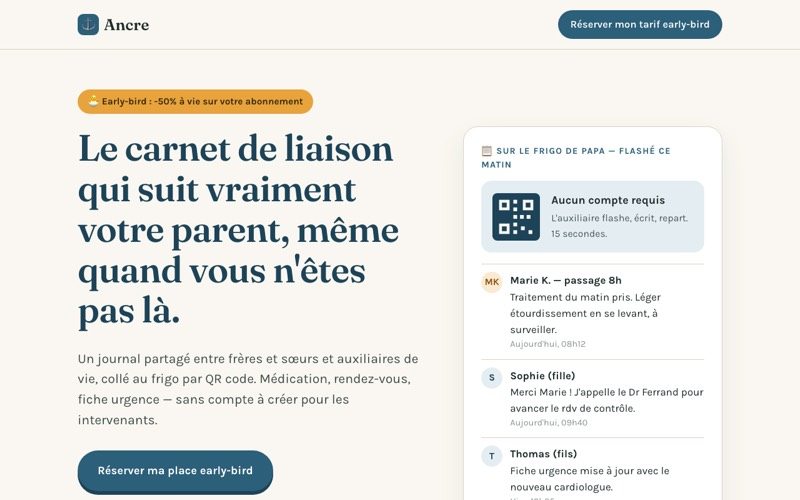
Ancre
6.2Le carnet de liaison famille + auxiliaires autour d'un parent âgé à domicile. QR sur le frigo, zéro compte.
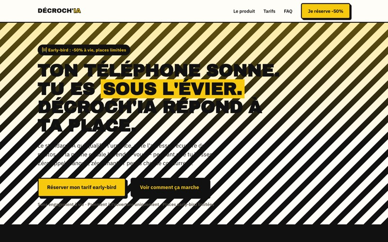
Décroch'IA
6.0Le standard IA qui décroche pendant le chantier : qualifie l'urgence, prend l'adresse, cale le RDV.
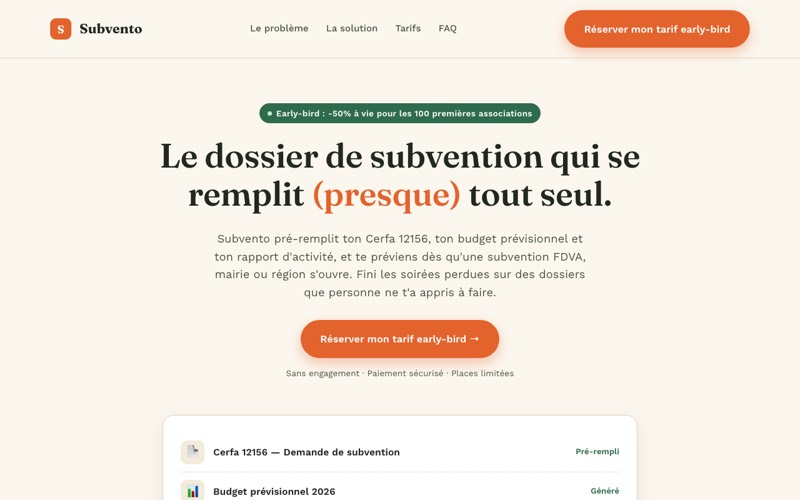
Subvento
5.8Dossiers de subvention assistés pour associations : Cerfa 12156, budget prévisionnel, veille et deadlines.
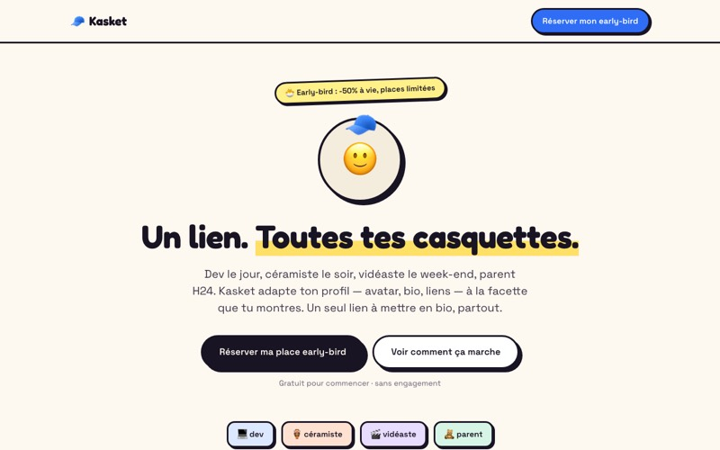
Kasket
5.4Le link-in-bio des multi-casquettes : un avatar qui change de rôle, un profil par facette, un seul lien.
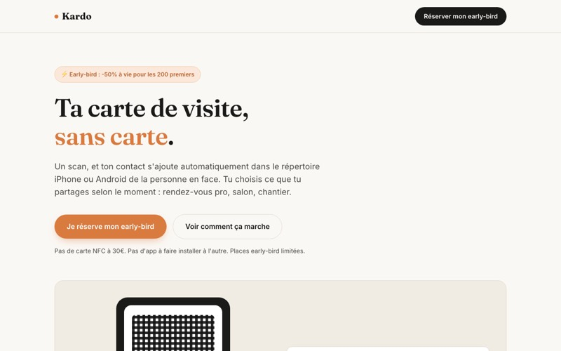
Kardo
5.4Ta carte de visite en un scan : contact ajouté direct au répertoire, tu choisis ce que tu partages.
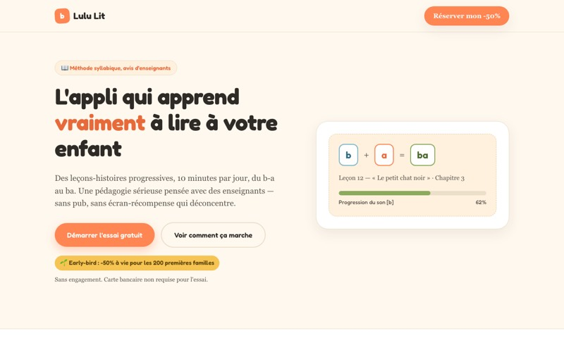
Lulu Lit
5.4Apprendre à lire en méthode syllabique, 4-7 ans : leçons-histoires progressives, 10 minutes par jour.
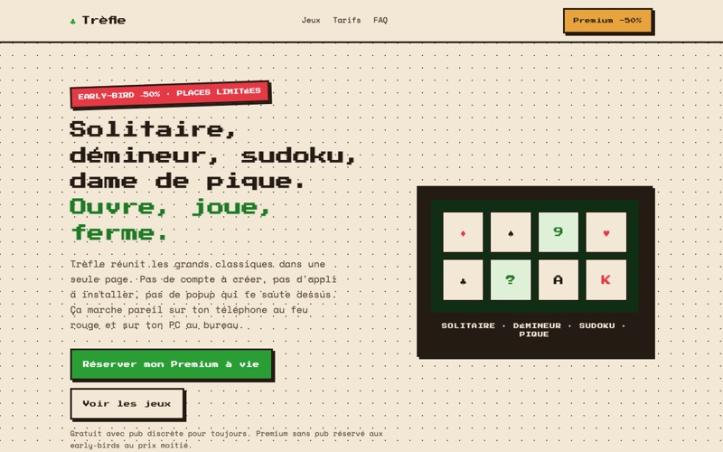
Trèfle
5.4Solitaire, démineur, sudoku jouables en 2 secondes, sans compte. Premium sans pub à petit prix.
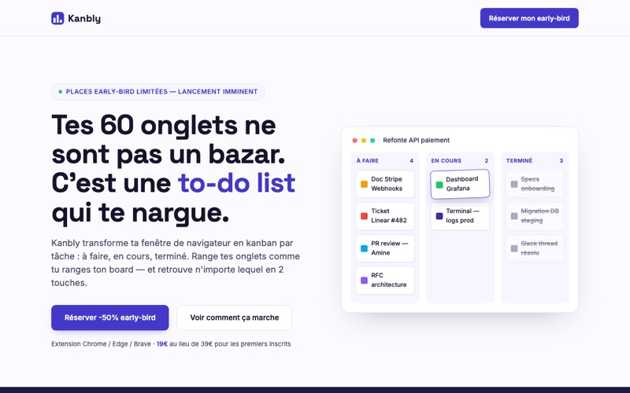
Kanbly
4.6Tes onglets organisés en kanban par tâche : à faire, en cours, terminé. Sessions sauvegardées.